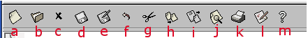

IV.Arrancando:La Pantalla de Emacs
IV.i.Arrancando Emacs
Pág.Anterior | Índice | Pág.Siguente
Disponemos de dos maneras de arrancar Emacs:
- Activando el icono de la aplicación, mediante "click" de ratón.
- Através de la linea de comandos (cónsola), tecleando : emacs <Enter>.
En un entorno gráfico, que será el entorno de referencia de éste manual, aparecerá una pantalla inicial semejante a esta:
Tras pulsar cualquier tecla o teclear el primer caracter, desaparece la pantalla inicial y se nos presenta un buffer vacio, *scratch* , con el que podemos comenzar a practicar.. :-)
 |
IV.ii.La Pantalla de Emacs: Visión de conjunto
Pág.Anterior | Índice | Inicio Página | Pág.Siguente
En la pantalla que nos presenta Emacs podemos distinguir cinco zonas:
- Barra de menús.
- Barra de herramientas.
- Zona de edición
- Linea de modo.
- Mini-buffer.
IV.iii.La Pantalla de Emacs: Barra de Menús
Pág.Anterior | Índice | Inicio Página | Pág.Siguente
Se puede navegar por los menús y submenús de Emacs usando el ratón, como se haria en cualquier otra aplicación.
Además de esta forma de acceso a las diversas opciones de la barra de menús , Emacs nos ofrece otras posibilidades:
Con el puntero del ratón en la zona de edición :
Pulsando simultaneamente las teclas <Ctrl> y <Bdrcho> :
Aparecerá una ventana con las opciones del menú Edit.
Pulsando simultaneamente las teclas <Ctrl> y <Bizqdo> :
Aparecerá una ventana con las opciones del menú Buffers
Pulsando simultaneamente las teclas <Ctrl> y <Bcentro> :
Aparecerá una ventana con las opciones del menú Edit -->Text Properties
Pulsando simultaneamente las teclas <Shift> y <Bizqdo> :
Aparece una ventana con el menú Font Menú
En el caso de no poder acceder con el ratón a las opciones de menú, pulsar <F10> : Se abrirá un buffer denominado *Completions*, que nos posibilitará el acceso a las opciones del menú atraves del teclado.
En el mini-buffer de *Completions*, aparecerá una opción por defecto, f==>File.
Si el cursor se encontrara en el mini-buffer de *Completions*, se traslada a la ventana del buffer pulsando la tecla <RePág> (En Mac OSX, con la combinación <Shift>-<RePág> ) o, sencillamente, utilizando el ratón.
Para seleccionar una opción, situamos el cursor sobre ella, mediante el ratón o las teclas de "flechas" y la activamos con <Enter>.
Para abandonar el buffer *Completions*, ejecutar el comando C-g con el cursor situado en el mini-buffer.
IV.iv.La Pantalla de Emacs: Barra de Herramientas
Pág.Anterior | Índice | Inicio Página | Pág.Siguente
Justo debajo de la barra de menús, encontramos los iconos de la barra de herramientas.
Situando el puntero del ratón sobre un icono, aparece un mensaje con una breve descripción de su función.
|  |
De izquierda a derecha, podemos ver los siguientes iconos:
- Abre un archivo en el buffer, o crea un nuevo archivo (Read a file into an Emacs buffer).
- Abre el editor de directorios, Dired. (Read a directory, operate on its files).
- Elimina el buffer corriente (Discard current buffer).
- Guarda el buffer corriente en su archivo asociado. (Save current buffer to its file).
- Guarda el buffer corriente en un archivo distinto. (Save current buffer to another file).
- Deshace la última operación. (Undo last operation).
- Corta el texto contenido en la región (selección) corriente. (Cut (kill) text in region betwen mark and current position).
- Copia el texto contenido en la región (selección) corriente. (Copy text in region betwen mark and current position).
- Pega el último texto copiado/cortado. (Paste (yank) text most recently cut/copyed).
- Busca una cadena. (Search forward for a string).
- Imprime la página. (Paste (Print current buffer with page headings).
- Personaliza Emacs utilizando una interfaz interactiva. (Edit preferences (customize)).
- Arranca el menú de ayuda. (Pop up the Help menu).
IV.v.La Pantalla de Emacs: Zona de Edición
Pág.Anterior | Índice | Inicio Página | Pág.Siguente
Como su nombre indica, en esta zona es donde realizaremos las principales tareas de edición
En ella, el cursor nos indicará, en todo momento, nuestra última posición.
IV.v.La Pantalla de Emacs: Linea de Modo
Pág.Anterior | Índice | Inicio Página | Pág.Siguente
En la linea de modo podemos encontrar la siguiente información:
- Cuando el contenido del buffer ha sido modificado, pero aún no se han guardado estas modificaciones, aparecen estos **. Una vez guardadas las modificaciones, esta señal desaparece.
- Nombre del buffer. ( En este caso, *scratch*).
- Modo Mayor.( En este caso, fundamental-mode).
- Modo Menor activo. ( En este caso, overwrite-mode) .
- Número de la linea en que se encuentra el cursor. ( En este caso, en la linea número 5) .
- Porción visible del contenido del buffer (en % ). (En este caso, All =Todo ).
IV.vi.La Pantalla de Emacs: Mini-buffer
Pág.Anterior | Índice | Inicio Página | Pág.Siguente
En el mini-buffer es donde Emacs nos muestra los comandos que entramos, donde tecleamos los nombres de los archivos, las cadenas de búsqueda...etc.
Para abandonar, en cualquier momento, el mini-buffer, teclear el comando C-g. Con la ejecución de este comando, se aborta cualquier acción que se estuviera realizando en el mini-buffer y el cursor se situa en la zona de edición.
IV.vii.La Pantalla de Emacs: El Tutorial de Emacs
Pág.Anterior | Índice | Inicio Página | Pág.Siguente
Llegado a este punto, pienso que es el momento de proponer la lectura del tutorial que acompaña a Emacs.
El Tutorial de Emacs es una excelente introducción a la aplicación. Su lectura no llevará mucho tiempo y puede proporcionar una visión general muy útil a la hora de decidir si seguir o no el aprendizaje de la aplicación.
Es sólo una sugerencia. La iniciación en el manejo de Emacs puede hacerse, por ejemplo, únicamente con el presente manual.
Veamos como acceder al Tutorial de Emacs en español:
Activar el menú : Help --> Emacs Tutorial (choose language)...
En el mini-buffer aparece el mensaje Language:.
Introducir sp.
Pulsando <Enter>, se abrirá un nuevo buffer de nombre (Tutorial.es), conteniendo el tutorial. Podemos ir moviéndonos por él con las teclas de flechas.